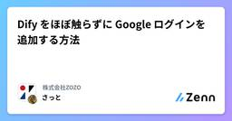
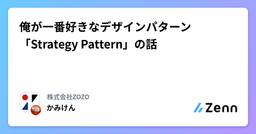
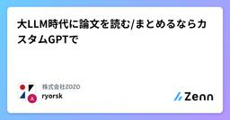
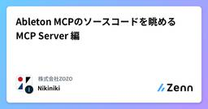
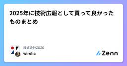

株式会社ZOZOのフィード
https://zenn.dev/p/zozotech
ファッションEC「ZOZOTOWN」、ファッションコーディネートアプリ「WEAR」などの各種サービスの企画・開発・運営や、「ZOZOSUIT」「ZOZOMAT」「ZOZOGLASS」などの計測テクノロジーの開発・活用をおこなっています。また、カスタマーサポート、物流拠点「ZOZO
フィード

Dify をほぼ触らずに Google ログインを追加する方法
株式会社ZOZOのフィード
はじめに本記事では、Difyで提供するアプリページ（/chat、/workflow）に Google アカウントでのログイン認証を最小の変更で導入する方法を紹介します。OSS版DifyはLLMアプリケーションの開発プラットフォームとして非常に便利な一方で、アプリページ（/chat、/workflow）においてデフォルトではアクセス制御の仕組みがありません。組織内で利用する場合、社内アカウントのみがアクセスできるようにしたいというニーズがありました。そこで、今回はOAuth2 Proxyを利用してGoogle認証を導入し、NGINXリバースプロキシと連携させることで、安全なアク...
3日前

俺が一番好きなデザインパターン「Strategy Pattern」の話 207
207
株式会社ZOZOのフィード
!🎄 本記事は ZOZO Advent Calendar 2025 シリーズ 8 の 11 日目です。ぜひ他の記事もご覧ください。 はじめにこんにちは。データシステム部・推薦基盤ブロックのかみけん（上國料）です。突然ですが、デザインパターンの中で個人的に一番好きなのは Strategy Pattern です。学生時代、研究で鬼のように使っていました。機械学習の研究では「複数のモデルを同じ条件で比較する」場面が頻繁にあって、モデル A とモデル B、さらに提案手法 C を差し替えながら実験を回すわけです。このとき、各モデルを Strategy として切り出しておくと、実験コ...
3日前

大LLM時代に論文を読む/まとめるならカスタムGPTで 3
株式会社ZOZOのフィード
!これは ZOZO Advent Calendar 2025 シリーズ6の7日目の記事です。今年はなんとシリーズ12まであるそうです。ぜひ他の記事もご覧ください！日々の業務で追われる中、最近では効率的かつ効果的に論文を読むためにLLMを活用しています。本記事では、これまでの経験で培ってきたノウハウとカスタムGPTをあわせた論文読みテクニックをご紹介します。 プロローグAdvent Calendarの時期がやってきましたね。Advent Calendarといえば、私がまだ大学院生だったころのお話を思い出します。https://www.slideshare.net/slides...
7日前

Ableton MCPのソースコードを眺める MCP Server 編
株式会社ZOZOのフィード
推薦基盤ブロックの荒木です。本記事は ZOZO Advent Calendar 2025 シリーズ 8 の 2 日目です。 概要本記事はAbleton MCPのソースコードを眺める 全体編の続編です。本記事はAbleton MCPのソースコードを読んでいきます。前回はリポジトリの全体を眺めました。重要な二つのファイルがあり、MCPサーバーの本体であるMCP_Server/server.pyと、Abletonを操作しているAbletonMCP_Remote_Script/init.pyです。本記事では、MCP Serverの本体であるMCP_Server/server.py...
7日前

2025年に技術広報として買って良かったものまとめ
株式会社ZOZOのフィード
これは「ZOZO Advent Calendar 2025」シリーズ12の7日目の記事です。技術戦略部 Developer Engagement ブロックの@wirohaです。Developer Engagement ブロックは技術広報を担っており、カンファレンスのスポンサーブースの出展も担当範囲のひとつです。この記事ではカンファレンスやイベントのために買って良かったものをまとめました。 伸縮式のバックバナーhttps://www.bannerstand-labo-sw.com/product-5503カンファレンスに出展する際のバックバナーを新調しました。それまではロール...
7日前

ProjectRefからGitHub Packagesへ：社内Scalaライブラリの管理を改善した話
株式会社ZOZOのフィード
!これは ZOZO Advent Calendar 2025 カレンダー シリーズ 7 の 6 日目の記事です。昨日は @TAKAyuki_atkwsk さんでした。 1. はじめに株式会社ZOZOの計測プラットフォーム開発本部計測システム部に所属しているでぃーのです。主にバックエンド開発を担当しています。本稿では、計測システムのバックエンド開発で共同利用している社内ScalaライブラリをProjectRefを使って参照する方法から、GitHub Packagesでパッケージとして管理し参照する方式に移行した話を紹介します。 背景①どうして社内Scalaライブラリが必要な...
8日前
Figma MCP × Claude Codeで効率的にUI実装するためのアプローチ
株式会社ZOZOのフィード
!本稿は、ZOZO Advent Calendar 2025 シリーズ 12 の 5 日目の記事です🎄 はじめにFigmaのデザインをFlutterで実装する際、デザインを見ながらコードを書く作業は時間がかかります。最近ではAIを活用してこの作業を効率化する方法が注目されています。この記事では、Figma MCP（Model Context Protocol） と Claude Code を組み合わせてFlutterのUI実装を効率化する方法を紹介します。特に、Figmaリンクの渡し方によって出力精度に違いがあることがわかったので、その知見を共有します。 Figma MC...
9日前
BigQuery Streaming Insert したデータは最大 90 分間 UPDATE/DELETE できない
株式会社ZOZOのフィード
はじめに!🎄 本記事は ZOZO Advent Calendar 2025 シリーズ 8 の 5 日目です。ぜひ他の記事もご覧ください。BigQuery の Python クライアント（google-cloud-bigquery）で Streaming Insert（insert_rows_json）を使って挿入したデータは、最大 90 分間 UPDATE/DELETE ができません。この仕様と対処法を解説します（知っている方も多い気がしますが、備忘録です）。 BigQuery Python クライアントのデータ挿入方式google-cloud-bigquery ラ...
9日前
Claude Code“が”作った ZOZO TECH BLOG のカバー画像ジェネレーター
株式会社ZOZOのフィード
!🎄 これは ZOZO Advent Calendar 2025 シリーズ 12 の 4 日目の記事です。昨日は「XR Kaigi 2025 での登壇にあわせて衝動買いした AI スマートグラスから考える眼鏡型デバイスの普及」でした。今年は 1 日に 12 本の記事が公開されるので、ぜひ他シリーズの記事もご覧ください。技術戦略部 Developer Engagement ブロックの @ikkou です。Developer Engagement ブロックは社外向けのいわゆる「技術広報」を担っていて、ZOZO のテックブログである『ZOZO TECH BLOG』の運営全般を担っていま...
10日前
Oh My ZshでGit操作を爆速化！便利なエイリアス200個を使いこなす
株式会社ZOZOのフィード
はじめにGitコマンドを毎回フルで打つのは面倒ですよね。git statusをgst、git pull origin 現在のブランチをggpullのように短縮できたら、作業効率が大幅に向上します。本記事では、Oh My Zshのgitプラグインを導入して、200以上の便利なGitエイリアスを使えるようにする方法を紹介します。 前提条件Zshがインストールされており、~/.zshrcファイルが存在することインターネット接続があること Oh My Zshのインストールまず、Oh My Zshをインストールします。以下のコマンドを実行してください。sh -c "$(...
10日前
subgrid を駆使した入力フォーム実装レシピ 〜ラベル天地中央揃えを添えて〜
株式会社ZOZOのフィード
!本稿は、 ZOZOTOWN 開発本部のフロントエンドエンジニア有志で開催されている、スタイル分科会にて挙がったテーマを記事にしたものです。!本稿は、ZOZO Advent Calendar 2025 シリーズ 1 の 4 日目の記事です。 この記事でわかることこのようなレイアウトの入力フォームの実装方法をご紹介します。構成はざっくりと以下のようになっています。このレイアウトの特徴は、ラベルの位置が入力フィールドに対して天地中央input にはバリデーションがあり、未入力時には入力フィールドにテキストが表示されるです。ここからは実装の詳細を記載してい...
10日前
XR Kaigi 2025 での登壇にあわせて衝動買いした AI スマートグラスから考える眼鏡型デバイスの普及
株式会社ZOZOのフィード
!🎄 これは ZOZO Advent Calendar 2025 シリーズ 12 の 3 日目の記事です。昨日は「ZOZOにおけるSpeaker Deckの運用方法」でした。今年は 1 日に 12 本の記事が公開されるので、ぜひ他シリーズの記事もご覧ください。技術戦略部 創造開発ブロックの @ikkou です。創造開発ブロックでは主に XR 領域を見据えた取り組みに関与したり、GitHub × ZOZOTOWN コラボや HHKB × ZOZOTOWN コラボなどの IT コラボを企画したりしています。2025年12月1日(月)から3日(水)の3日間にわたり “「バーチャル領域の...
11日前
GraalVM Native Imageビルド時に渡すリフレクション設定を自動生成！Tracing Agent活用法
株式会社ZOZOのフィード
!これは ZOZO Advent Calendar 2025 カレンダー シリーズ 7 の 3 日目の記事です。昨日は @matsu4ki さんでした。 1. はじめに株式会社ZOZOの計測システム部バックエンドブロック（以降は計測バックエンド）に所属しているでぃーのです。主にバックエンド開発を担当しています。本稿では、GraalVM Native Imageを使ってビルドする際に、多くのケースで必要であろう実行時に決まる部分の情報を設定ファイルに書き出すプロセスをTracing Agentを使って効率化する方法を紹介します。 2. 課題：リフレクション設定の難しさ ...
11日前
セマンティックHTML要素の使い分け
株式会社ZOZOのフィード
!本稿は、ZOZO Advent Calendar 2025 シリーズ 1 の 3 日目の記事です🎄同組織（シリーズ3の4日目）の著者の記事は「アクセシビリティ向上にはセマンティックHTMLを優先しWAI-ARIAは必要最小限にする」です。 概要セマンティックHTMLとは、HTML要素を「見た目」ではなく「意味」に基づいて使用するマークアップ手法である。HTML Living Standardでは、すべての要素と属性が「特定の意味（semantics）」を持つように定義されており、要素を本来の意図された目的で使用することを推奨している[1]。 セマンティックHTMLの利点...
11日前
コンテンツカテゴリの所属って全暗記しないとダメなの？いいえ、そんなことはありません。
株式会社ZOZOのフィード
!本稿は、ZOZO Advent Calendar 2025 シリーズ 3 の 3 日目の記事です。 はじめに日々 HTML と戦っているみなさん、こんにちは。突然ですが、みなさんは実装中に「この要素に、あの要素を子要素で入れていいんだろうか？」と悩むことはありませんか？困ったときのエンジニアの味方、 MDN にその答えを求めることは多いと思います。そしてこう思うのではないでしょうか。「これ全暗記しないといかんのか」「いっそ div の悪魔と契約してしまおうか」と……。この記事では、そんなエンジニアの皆様の葛藤が少しでも減るような、「ざっくりとコンテンツカテゴリを扱うコツ...
11日前
Vertex AI のジョブが動かない？マシン変えたら直るかも
株式会社ZOZOのフィード
!🎄 本記事は ZOZO Advent Calendar 2025 シリーズ 8 の 3 日目です。ぜひ他の記事もご覧ください。 はじめにこんにちは。データシステム部・推薦基盤ブロックのかみけん（上國料）です。私たちのチームでは、Google Cloud を利用しており、ZOZOTOWNの推薦システムを支えるMLパイプラインを Vertex AI Pipelines で運用しています。学習ジョブでは用途に応じて GPU（NVIDIA L4 など）やメモリマシン（n1-highmem など）を使い分けています。ある日、そんなパイプラインが突然動かなくなりました。本記事では、...
11日前
ZOZOにおけるSpeaker Deckの運用方法
株式会社ZOZOのフィード
!🎄 本記事は ZOZO Advent Calendar 2025 シリーズ 12 の 2 日目です。昨日は「2025年にZOZOが協賛した技術カンファレンスまとめ」でした。今年は 1 日に 12 本の記事が公開されるので、ぜひ他シリーズの記事もご覧ください。技術戦略部 Developer Engagement ブロックの @ikkou です。Developer Engagement ブロックは社外向けのいわゆる「技術広報」を担っていて、技術カンファレンスや勉強会などで ZOZO エンジニアが発表する登壇資料のレビューから、Speaker Deck への公開作業まで一気通貫で担当し...
12日前
Ablenton MCPのソースコードを眺める 全体編
株式会社ZOZOのフィード
推薦基盤ブロックの荒木です。本記事は ZOZO Advent Calendar 2025 シリーズ 8 の 2 日目です。 概要本記事はAbleton MCPのソースコードを読んでいきます。Abletonとは、DAW(音楽制作を行うデスクトップアプリケーションのこと)の一種です。DAWはUIが複雑で操作が難しく時間もかかります。(Google Slideの10倍くらいボタンがある)Ableton MCPを使うことでClaudeなどから自然言語を用いてAblentonを操作することができます。サンプル動画はこちらAbletonの画面 : 操作が大変そうな感じが伝わるでし...
12日前
2025年にZOZOが協賛した技術カンファレンスまとめ
株式会社ZOZOのフィード
!🎄 本記事は ZOZO Advent Calendar 2025 シリーズ 12 の 1 日目です。今年は 1 日に 12 本の記事が公開されるので、ぜひ他シリーズの記事もご覧ください。技術戦略部 Developer Engagement ブロックの @ikkou です。Developer Engagement ブロックは社外向けのいわゆる「技術広報」を担っていて、テックブログに公開される全記事のレビューを含む運営の他、ZOZO として協賛する技術カンファレンスに関しての予算策定を含む一切を取りまとめています。また、協賛するすべての技術カンファレンスにおいて、会期中はブーススタッ...
13日前
ZOZO Advent Calendar 2025の見どころ
株式会社ZOZOのフィード
!🎄 本記事は ZOZO Advent Calendar 2025 シリーズ 1 の 1 日目です。今年は 1 日に 12 本の記事が公開されるので、ぜひ他シリーズの記事もご覧ください。技術戦略部 Developer Engagement ブロックの @ikkou です。Developer Engagement ブロックは社外向けのいわゆる「技術広報」に加え、社内向けのエンゲージメント施策に取り組んでいます。冬の風物詩となっているアドベントカレンダーは Developer Engagement ブロックが音頭を取りながら進めています。昨年の「ZOZO Advent Calenda...
13日前